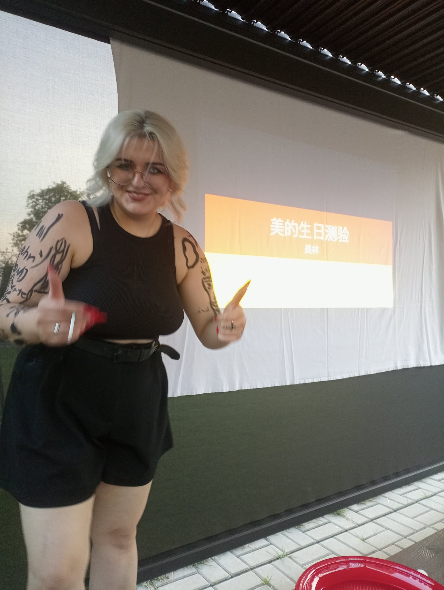

NWK Festival powstał jako żart między grupą przyjaciół.
Zaczęliśmy tak nazywać co roczny grill urodzinowy Mio.
Jest to dla nas ważne wydarzenie, ponieważ wszysycy jesteśmy
rozproszeni po Polsce i nie widujemy się tak często.
Nazywamy to festiwalem muzycznym, ponieważ Mio interesuję się muzyką
(a przede wszystkim ma wybitny gust muzyczny).
Także od 19 czerwca 2024 roku, jestem dumnym
organizatorem tego trwającego już trzeci rok żartu.
